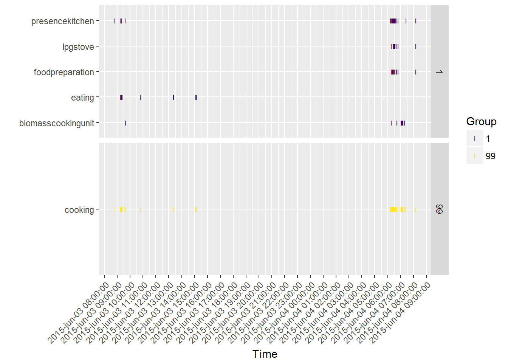
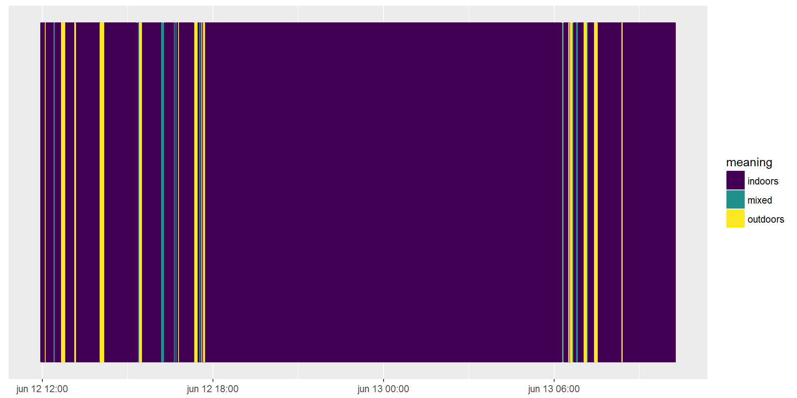

This package is under development.
Introduction
This package aims at supporting the analysis of annotation results of wearable camera images. The workflow is as follows:
participants of a study wear a camera that automatically produces pictures;
these pictures are then annotated by coders using a list of annotations;
the results of these annotations are then used to e.g. reconstruct the sequence of activities of a person during the day, or link it to pollution exposure.
This R package supports the last step. How to calculate interrater agreement? How to plot the data?
Data structure
The structure of data in the package is adapted to data produced using the Doherty Sensecam Browser for annotation (see https://sensecambrowser.codeplex.com/) and works with data produced using the XnView MP software. However, input functions could be adapted for other formats.
The data needed for using the package are:
- A list of possible annotation, called
dico. It contains three columns Code, Meaning, Group. The Code is the unique X-digit identifier of an activity. The Meaning, preferably in a single word such as washingYourTeeth, explains the code. The Group allows to group activities into meaningful categories, i.e. washingYourTeeth and washingYourHands could be in the hygiene Group whereas eatingRealFood and snackingOnCheapChocolate could be in the eating Group. If you do not use abbreviations, Code and Meaning can be equal.
path_dico <- system.file("extdata", "dicoCoding_pinocchio.csv", package = "watchme")
sep_dico <- ";"
dico <- read.table(path_dico, sep = sep_dico, header=TRUE)
dico## Code Meaning Group
## 1 01A BiomassCookingUnit 1
## 2 01B LPGStove 1
## 3 01C OtherCookingUnit 1
## 4 02B PresenceKitchen 1
## 5 02A FoodPreparation 1
## 6 03A Eating 1
## 7 01. Cooking 99- A table of coding results. The columns are name/nothing, image_path/X.Filename.With.Ext, image_time/EXIF.Date.Taken..Y.m.d_H.M.S., annotation/IPTC.Keywords. In this case the column name is a repetition of the participant name. The column image_path indicates the path to the picture, or its name. It only needs to be unique for each picture. The column image_time gives the date and time at which the picture was taken. The column annotation gives the code(s) associated with the picture. They can be pasted one after another, since we will use grepl() for finding the unique X-digit identifiers, or they can be on separate lines, since all codes for one picture identified by one picture_name will be merged.
path_results <- system.file("extdata", "image_level_pinocchio.csv", package = "watchme")
sep_results <- ","
coding_results <- read.table(path_results, sep = sep_results, header = TRUE)
coding_results <- dplyr::tbl_df(coding_results)
coding_results## # A tibble: 981 × 4
## name
## <fctr>
## 1 pinocchio
## 2 pinocchio
## 3 pinocchio
## 4 pinocchio
## 5 pinocchio
## 6 pinocchio
## 7 pinocchio
## 8 pinocchio
## 9 pinocchio
## 10 pinocchio
## # ... with 971 more rows, and 3 more variables: image_path <fctr>,
## # image_time <fctr>, annotation <fctr>path_results <- system.file("extdata", "sample_coding1.csv", package = "watchme")
sep_results <- "\t"
coding_results <- read.table(path_results, sep = sep_results, header = TRUE,
quote = "\'")
coding_results <- dplyr::tbl_df(coding_results)
coding_results## # A tibble: 1,263 × 4
## X.Filename.With.Ext EXIF.Date.Taken..Y.m.d_H.M.S.
## <fctr> <fctr>
## 1 "B00000000_21I6LW_20150612_115011E.JPG 2015-06-12_11-49-56
## 2 "B00000001_21I6LW_20150612_115012E.JPG 2015-06-12_11-49-59
## 3 "B00000002_21I6LW_20150612_115013E.JPG 2015-06-12_11-50-01
## 4 "B00000003_21I6LW_20150612_115014E.JPG 2015-06-12_11-50-04
## 5 "B00000004_21I6LW_20150612_115014E.JPG 2015-06-12_11-50-06
## 6 "B00000005_21I6LW_20150612_115015E.JPG 2015-06-12_11-50-09
## 7 "B00000006_21I6LW_20150612_115635E.JPG 2015-06-12_11-56-35
## 8 "B00000007_21I6LW_20150612_115710E.JPG 2015-06-12_11-57-10
## 9 "B00000008_21I6LW_20150612_120259E.JPG 2015-06-12_12-02-59
## 10 "B00000009_21I6LW_20150612_120335E.JPG 2015-06-12_12-03-35
## # ... with 1,253 more rows, and 2 more variables: IPTC.Keywords <fctr>,
## # X.... <fctr>
From input data to tibble data.frames
Using both these inputs, we create a tibble on which operations will be performed.
The object has the following variables:
participant_id, Name or ID number of the participant (character)
image_time, Path or name of the image in order to be able to identify duplicates (character)
image_time, Time and date of each image (POSIXt)
booleanCodes, columns of boolean, indicating if a given code was given to a given picture. codes is a condensed form of this.
the attributedico,tibblefor defining the codes with at least Code and Meaning column, and Group column for having groups of codes (e.g. sport encompasses running and swimming)
The function used to create such an object is called watchme_prepare_data.
For finding both inputs and interpreting them the watchme_prepare_data function needs to know the paths to each file, path_results and path_dico and the separator used in each of them, sep_results and sep_dico.
Below we illustrate the use of watchme_prepare_data.
library("watchme")
path_results <- system.file("extdata", "image_level_pinocchio.csv", package = "watchme")
sep_results <- ","
path_dico <- system.file("extdata", "dicoCoding_pinocchio.csv", package = "watchme")
sep_dico <- ";"
results_table <- watchme_prepare_data(path_results=path_results, sep_results=sep_results,
path_dico=path_dico, sep_dico=sep_dico)
results_table## # A tibble: 955 × 10
## image_path
## <chr>
## 1 \\2015-06-04 08-36-32\\\\B00000001_21I6LW_20150603_084228E.JPG
## 2 B00000000_21I6LW_20150603_084228E.JPG
## 3 \\2015-06-04 08-36-32\\\\B00000002_21I6LW_20150603_084236E.JPG
## 4 B00000003_21I6LW_20150603_084313E.JPG
## 5 B00000004_21I6LW_20150603_084349E.JPG
## 6 B00000005_21I6LW_20150603_084429E.JPG
## 7 B00000006_21I6LW_20150603_084509E.JPG
## 8 B00000007_21I6LW_20150603_084624E.JPG
## 9 B00000008_21I6LW_20150603_084657E.JPG
## 10 B00000009_21I6LW_20150603_084739E.JPG
## # ... with 945 more rows, and 9 more variables: image_time <dttm>,
## # participant_id <chr>, `01a` <lgl>, `01b` <lgl>, `01c` <lgl>,
## # `02b` <lgl>, `02a` <lgl>, `03a` <lgl>, `01.` <lgl>The data frame can be plotted:
watchme_plot_raw(results_table)
From the coding results to table of events
Using the annotations from the images, when can easily deduce a sequence of events. For instance having two subsequent pictures of washingYourTeeth taken at respectively t1 and t2 could be interpreted as having a washingYourTeeth event from t1 to t2. The watchme_aggregate allows the conversion from a wearableCamImages object to a table (dplyr class tbl_df) with
event index from 1 to the number of events
start time (
POSIXt),end time (
POSIXt),eventCode (
character),startPicture and endPicture,
noOfPictures in the event.
If pictures have several codes, then there can be synchronous events.
The function watchme_aggregate takes two arguments: a tibble created by watchme_prepare_data and a minimal duration for the events, in pictures, which is called minDuration. Below are two examples.
data("coding_example")
eventTable <- watchme_aggregate(df = coding_example)
knitr::kable(head(eventTable))| event_code | start_time | end_time | no_pictures | start_picture | end_picture | group | meaning | duration |
|---|---|---|---|---|---|---|---|---|
| 01. | 2015-06-03 08:45:09 | 2015-06-03 08:45:09 | 1 | 7 | 7 | 99 | cooking | 0 |
| 01. | 2015-06-03 09:13:34 | 2015-06-03 09:13:34 | 1 | 50 | 50 | 99 | cooking | 0 |
| 01. | 2015-06-03 09:15:24 | 2015-06-03 09:15:24 | 1 | 53 | 53 | 99 | cooking | 0 |
| 01. | 2015-06-03 09:16:46 | 2015-06-03 09:22:23 | 8 | 55 | 62 | 99 | cooking | 337 |
| 01. | 2015-06-03 09:37:20 | 2015-06-03 09:37:53 | 2 | 81 | 82 | 99 | cooking | 33 |
| 01. | 2015-06-03 10:48:40 | 2015-06-03 10:48:40 | 1 | 180 | 180 | 99 | cooking | 0 |
eventTable2 <- watchme_aggregate(df = coding_example, min_no_pictures = 2)
knitr::kable(head(eventTable2))| event_code | start_time | end_time | no_pictures | start_picture | end_picture | group | meaning | duration |
|---|---|---|---|---|---|---|---|---|
| 01. | 2015-06-03 09:16:46 | 2015-06-03 09:22:23 | 8 | 55 | 62 | 99 | cooking | 337 |
| 01. | 2015-06-03 09:37:20 | 2015-06-03 09:37:53 | 2 | 81 | 82 | 99 | cooking | 33 |
| 01. | 2015-06-03 13:21:36 | 2015-06-03 13:22:43 | 3 | 309 | 311 | 99 | cooking | 67 |
| 01. | 2015-06-03 15:06:04 | 2015-06-03 15:06:47 | 2 | 449 | 450 | 99 | cooking | 43 |
| 01. | 2015-06-04 06:13:30 | 2015-06-04 06:16:37 | 5 | 801 | 805 | 99 | cooking | 187 |
| 01. | 2015-06-04 06:21:13 | 2015-06-04 06:35:26 | 19 | 811 | 829 | 99 | cooking | 853 |
Plotting a table of events
The package provides a function using the R ggplot2 package for plotting sequences of events.
Below are two examples.
data("coding1")
event_table <- watchme_aggregate(df = coding1)
watchme_plot_sequence(event_table)
watchme_plot_sequence(event_table, x_axis = "picture")
For plotting results from more than one coder, one could do this:
data("coding1")
data("coding2")
dico <- attr(coding1, "dico")
event_table1 <- watchme_aggregate(df = coding1)
event_table1 <- mutate(event_table1, coder = "coder1")
event_table2 <- watchme_aggregate(df = coding2)
event_table2 <- mutate(event_table2, coder = "coder2")
event_table <- dplyr::bind_rows(event_table1, event_table2)
attr(event_table, "dico") <- dico
watchme_plot_sequence(event_table) +
facet_grid(coder ~ .)
Calculating interrater agreement
An important aspect of coding images is having a list of annotations that provides consistent results acrossed (trained) coders, or raters. Therefore one needs to check and report interrater agreement.
Simply look at disagreements
In the package there is a function for getting the times and codes of pictures for which coders disagree, which might be useful for exploring differences when e.g. training coders.
data("coding1")
data("coding2")
results_list <- list(coding1, coding2)
names_list <- c('Cain', 'Abel')
watchme_output_differences(results_list = results_list,
names_list = names_list)## # A tibble: 33 × 3
## Cain Abel image_time
## <chr> <chr> <dttm>
## 1 indoors, , , , , outdoors, , , 2015-06-12 12:23:40
## 2 , , , mixed, , outdoors, , , 2015-06-12 12:24:59
## 3 , , , mixed, , outdoors, , , 2015-06-12 12:25:34
## 4 , , , mixed, , outdoors, , , 2015-06-12 13:08:17
## 5 , outdoors, , , indoors, , , , 2015-06-12 13:10:01
## 6 , , , , indoors, , , , 2015-06-12 15:19:45
## 7 , , , mixed, , outdoors, , , 2015-06-12 15:23:47
## 8 , , , mixed, , outdoors, , , 2015-06-12 15:24:23
## 9 , , , mixed, , outdoors, , , 2015-06-12 15:24:55
## 10 indoors, , , , , outdoors, , , 2015-06-12 16:06:08
## # ... with 23 more rowsAssess interrater agreement
Nowadays the state of the art is to use Cohen’s kappa for codes attributed to pictures, even if they are not independent (Aiden Doherty’s personal communication). In the package we provide a function for calculating interrater agreement (or IRR) this way, which is called watchme_ira. It uses functions of the R irr package. It allows using several possibilities for defining what codes are to be compared:
one could compare the global annotations of all files, i.e. all codes at the same time. For instance compare washingYourTeeth; readingABook to washingYourTeeh; readingAMagazine for picture 1 between coder A and coder B. This is the default option.
one could look separately at each code using binary variables. For instance for washingYourTeeth comparing TRUE to TRUE and for readingABook TRUE to FALSE. For this one needs to set the
by_codeargument to TRUE.
In the case in which wants to compare results provided by more than two coders, another choice to be made is whether all coders are to be compared together using Fleiss Kappa, or one to one using Cohen’s kappa. This is set with the one_to_one logical argument.
The comparison one wants to make depends on the context of the calculation of the IRR. When developping a new list of annotations one wants to see interrater agreement for each code, later when may want to report a single figure for the whole list of annotations.
Below are a few examples for two coders to be compared.
The default is to compare all annotations together.
data('coding1')
data('coding2')
# With two coders
results_list <- list(coding1, coding2)
names_list <- c('Cain', 'Abel')
ira_all <- watchme_ira(results_list, names_list = names_list)
kable(ira_all)| method | pictures | agreed_on | raters | Kappa | z | p_value |
|---|---|---|---|---|---|---|
| Cohen’s Kappa for 2 Raters (Weights: unweighted) | 1263 | 1230 | Cain, Abel | 0.8456533 | 34.3822 | 0 |
Here we compare annotations by code.
ira_codes <- watchme_ira(results_list, names_list = names_list, by_code = TRUE)
kable(ira_codes)| code | method | pictures | agreed_on | raters | Kappa | z | p_value |
|---|---|---|---|---|---|---|---|
| indoors | Cohen’s Kappa for 2 Raters (Weights: unweighted) | 1263 | 1251 | Cain, Abel | 0.9430487 | 33.52833 | 0 |
| outdoors | Cohen’s Kappa for 2 Raters (Weights: unweighted) | 1263 | 1232 | Cain, Abel | 0.8296414 | 29.86610 | 0 |
| in_vehicle | Cohen’s Kappa for 2 Raters (Weights: unweighted) | 1263 | 1263 | Cain, Abel | NaN | NaN | NaN |
| mixed | Cohen’s Kappa for 2 Raters (Weights: unweighted) | 1263 | 1241 | Cain, Abel | 0.0000000 | NaN | NaN |
| non_codable | Cohen’s Kappa for 2 Raters (Weights: unweighted) | 1263 | 1263 | Cain, Abel | NaN | NaN | NaN |
And then for more than two coders. If we do the comparison one by one, the resulting table has as many lines as there are possible pairs of coders. Here we compare all annotations together but even when comparing more than two coders you can do it by group of codes or by code.
results_list2 <- list(coding1, coding1, coding2)
names_list2 <- c('Riri', 'Fifi', 'Loulou')
watchme_ira(results_list2, names_list = names_list2, one_to_one = FALSE) %>%
kable()| method | pictures | agreed_on | raters | Kappa | z | p_value |
|---|---|---|---|---|---|---|
| Fleiss’ Kappa for m Raters | 1263 | 1230 | Riri, Fifi, Loulou | 0.8964106 | 63.90226 | 0 |
watchme_ira(results_list2, names_list = names_list2, one_to_one = TRUE)%>%
kable()| method | pictures | agreed_on | raters | Kappa | z | p_value |
|---|---|---|---|---|---|---|
| Cohen’s Kappa for 2 Raters (Weights: unweighted) | 1263 | 1263 | Riri, Fifi | 1.0000000 | 43.18003 | 0 |
| Cohen’s Kappa for 2 Raters (Weights: unweighted) | 1263 | 1230 | Riri, Loulou | 0.8456533 | 34.38220 | 0 |
| Cohen’s Kappa for 2 Raters (Weights: unweighted) | 1263 | 1230 | Fifi, Loulou | 0.8456533 | 34.38220 | 0 |
Meta
- Please report any issues or bugs.
- License: GPL
- Get citation information for
opencagein R doingcitation(package = 'watchme') - Please note that this project is released with a Contributor Code of Conduct. By participating in this project you agree to abide by its terms.